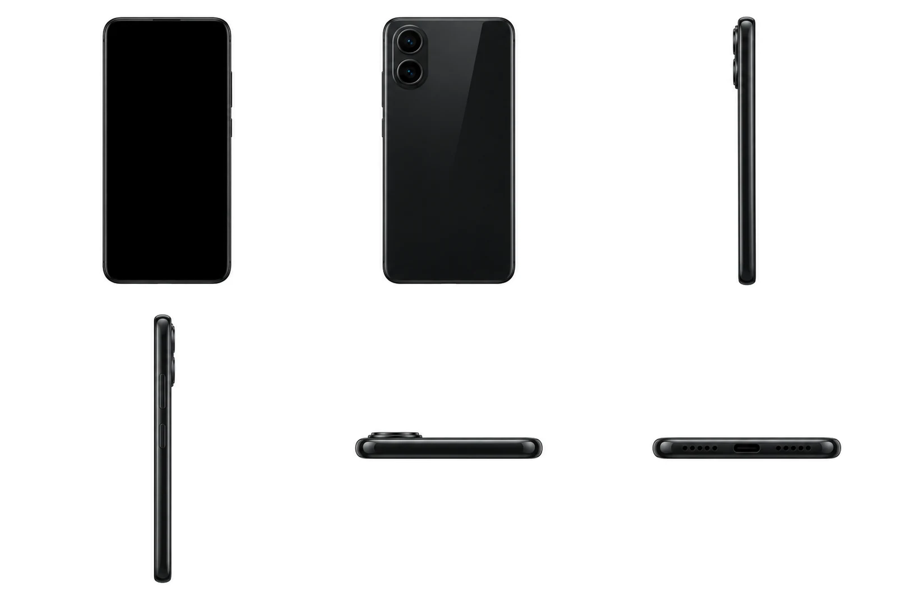
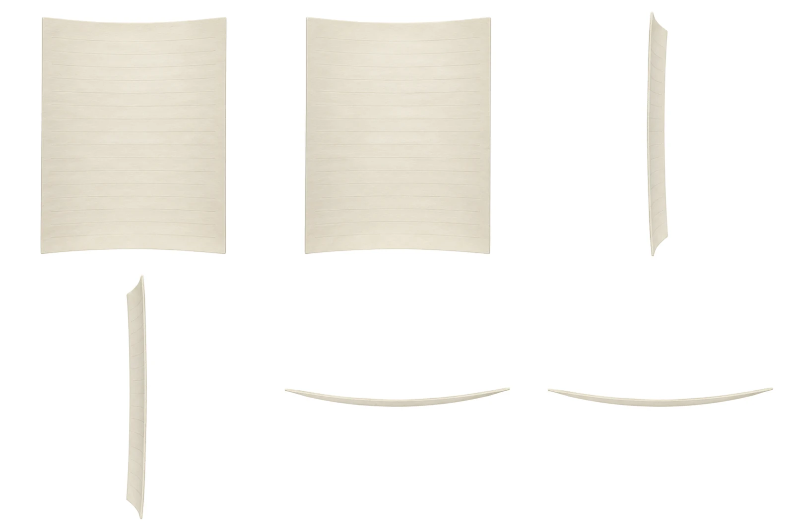
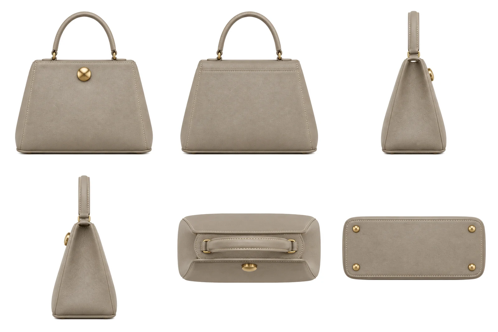
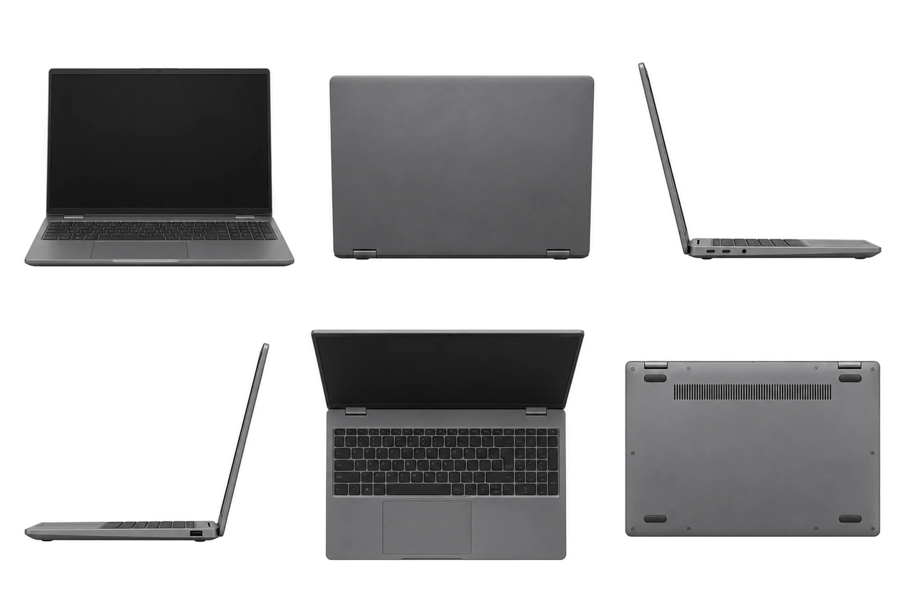
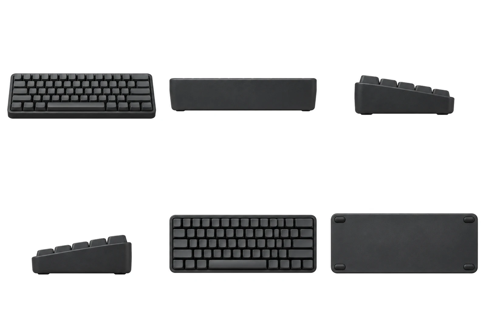
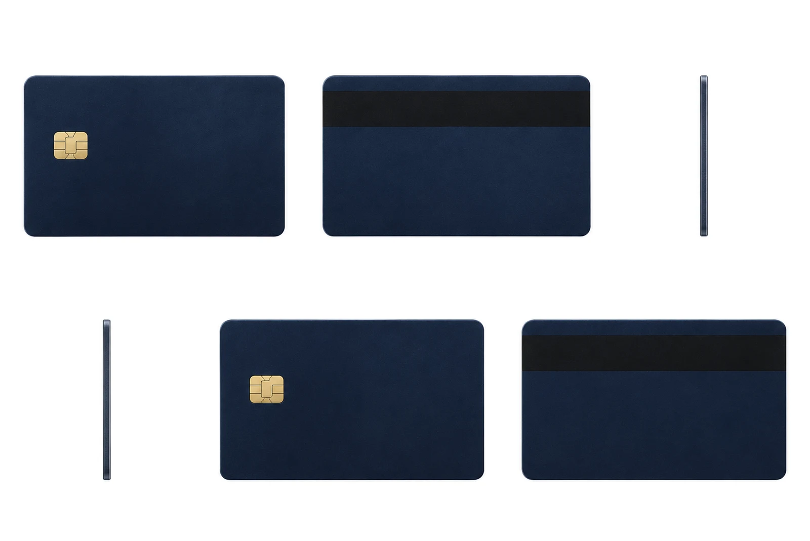
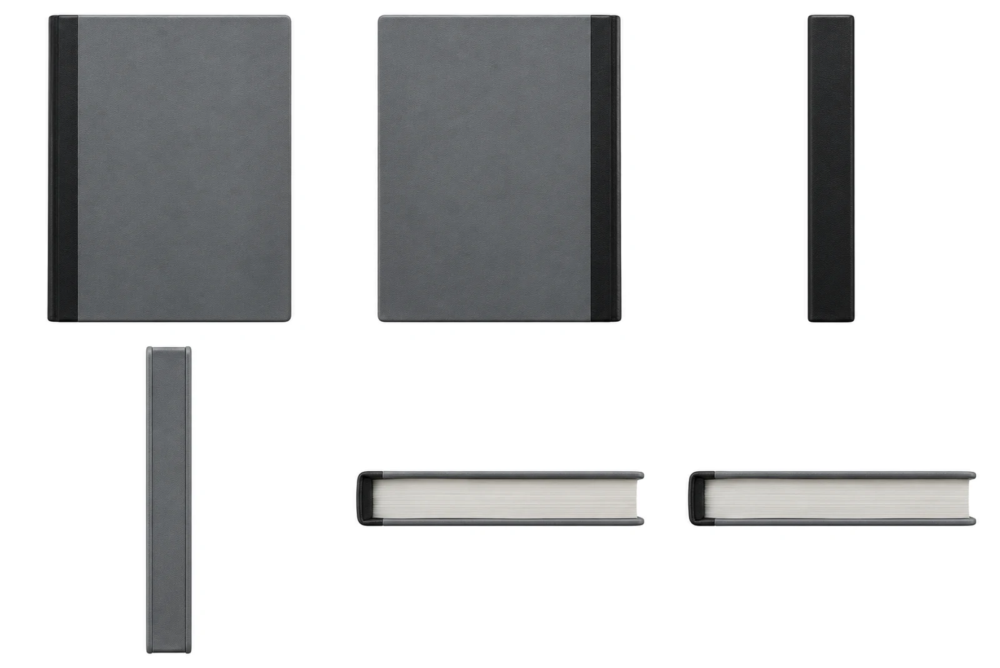
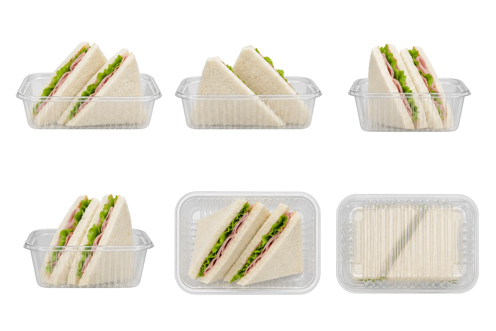

第一集
剧本与分镜
完整剧本与分镜脚本
下载原文环大陆地区短剧 · 第一集 原片时长 110.64 秒 故事梗概 灰西装女职员在一处接待台核对交易，随后在工位发现账单并当面质问白外套同事。餐厅与手袋店消费的画面穿插说明金额落差，争执升级至公开推搡。最后切到一间管理办公室，女经理把案卷放上桌，话题转到是否继续接案。 人物 灰西装女职员是交易、账单和工位冲突的焦点，米色西装为后段同一主线人物状态。白外套女同事出现在争执与消费插镜中。两名男子在交易现场，短发女经理负责结尾的案卷谈话。 场景 高层小会议间承担核验，开放办公区承担对质。暖色长桌餐厅与浅金手袋柜台是消费插叙。转角落地窗办公室接入案卷谈话。 道具用途 支付终端、深蓝卡、账单和手机组成交易信息。手袋使消费形象具体化。键盘和餐盒确定工位位置。案卷夹、笔记本电脑和横臂灯承担末段办公室动作。 剧本与分镜 按原片抽帧重建的复拍制作稿。画面未能确认的对白、音效与镜头节奏按下表执行。 | 镜号 | 画面内容 | 镜头视角 | 使用资产 | 动作描述 | 台词/旁白 | 音效 | 单镜头时长 | | 01 | 长桌两侧核对支付 | 窗边纵向广角中景 | 灰西装女职员、深色西装男主管、炭衣男见证人、支付终端、深蓝芯片卡、高层小会议间 | 主管指向桌上终端，另一人站在后方观察 | 主管：先核对一下这笔交易。 | 厅内底响 | 8.00秒 | | 02 | 女职员拿起终端，看到屏幕 | 正面偏低中近景 | 灰西装女职员、桌面支付终端、深蓝芯片卡、炭衣男见证人 | 她双手翻起终端，抬头看向炭衣男子 | 屏幕信息：7,000 日元。 女职员：怎么会？ | 按键响、抽气 | 9.00秒 | | 03 | 开放工位，女职员翻账单 | 办公区全景接桌边中景 | 灰西装女职员、开放办公区、账单纸、三明治餐盒、键盘 | 她在工位摊纸查看，其他同事渐近围观 | — | 键盘、人群低语 | 9.00秒 | | 04 | 白外套同事贴到桌边 | 交叉双人近景 | 白外套女同事、灰西装女职员、账单纸 | 白衣女子低声贴近，女职员把纸收在胸前 | 女职员：这张账单是怎么回事？ | 纸张挤压、背景声稍停 | 15.00秒 | | 05 | 手袋被举起展示 | 手袋与侧脸近景 | 灰米手提包、白外套女同事、浅金手袋柜台 | 手从提梁抬起包，让包身露出 | — | 皮革、扣件 | 5.00秒 | | 06 | 长桌餐叙与支出明细 | 餐厅纵深全景接账单插入 | 暖色长桌餐厅、账单纸 | 在多人餐叙画面前放大消费数额 | 画面信息：800,000 日元。 | 餐具、低声交谈 | 8.00秒 | | 07 | 切到手袋柜台的交易 | 侧后中景接票据近景 | 白外套女同事、浅金手袋柜台、灰米手提包、账单纸 | 柜台前递付，金额插入单独合成 | 画面信息：2,400,000 日元。 | 柜台轻响 | 10.00秒 | | 08 | 女职员站起来对质 | 平视交叉近景 | 两位女职员、开放办公区、账单纸 | 她抓住对方手臂询问，两人寸步不让 | 灰衣女职员：报酬我也分给你了。 | 急促对白、纸响 | 8.00秒 | | 09 | 争执后女职员倒在工位前 | 广角大全景 | 灰西装女职员、白外套女同事、开放办公区 | 灰衣女职员退到地上，其他人停在过道两侧 | — | 椅脚划地、人声压低 | 6.00秒 | | 10 | 短发女经理递上案卷 | 桌面斜角双人中景 | 米色西装状态、黑西装短发女经理、案卷夹、银灰笔记本电脑、横臂灯 | 经理从桌边放下案卷，坐着的人抬头 | 经理：按平常的方式处理。 | 文件夹触桌 | 11.00秒 | | 11 | 女经理站在桌边追问接案 | 反向宽景 | 黑西装短发女经理、米色西装状态、转角落地窗办公室 | 经理站定，浅西装女子没有伸手接 | 经理：这件案子不接吗？ | 窗外城市底响 | 13.00秒 | | 12 | 浅西装女子转头看向门口 | 侧颜近景 | 米色西装状态、转角落地窗办公室 | 她听完保持沉默，最后移开目光 | 画外：你还能继续下去吗？ | 短暂停顿后切断 | 8.64秒 | 时长合计 110.64 秒
制作资产
角色资产 · 12 项

场景资产 · 5 项
道具资产 · 20 项








